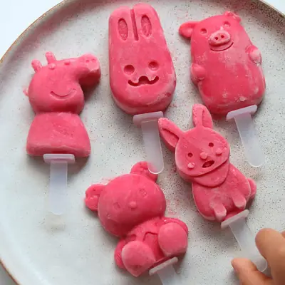

Strawberry Popsicles

Ingredients
- 1 pound fresh ripe strawberries, hulled and sliced
- 3/4 cup plain Greek yogurt
- 2-4 tablespoons honey (see note)
- 1 tablespoon lemon juice
- 1 teaspoon vanilla extract (optional)
Steps
- Add all the ingredients into a blender and blend until smooth.
- Pour the mixture into your mold. Freeze for at least six hours, preferably overnight.
Recipe by Min Kwon · Kidfriendly Meals, from MJ and Hungryman. Saved here for personal use; the original has the full notes, tips and photos. Open original